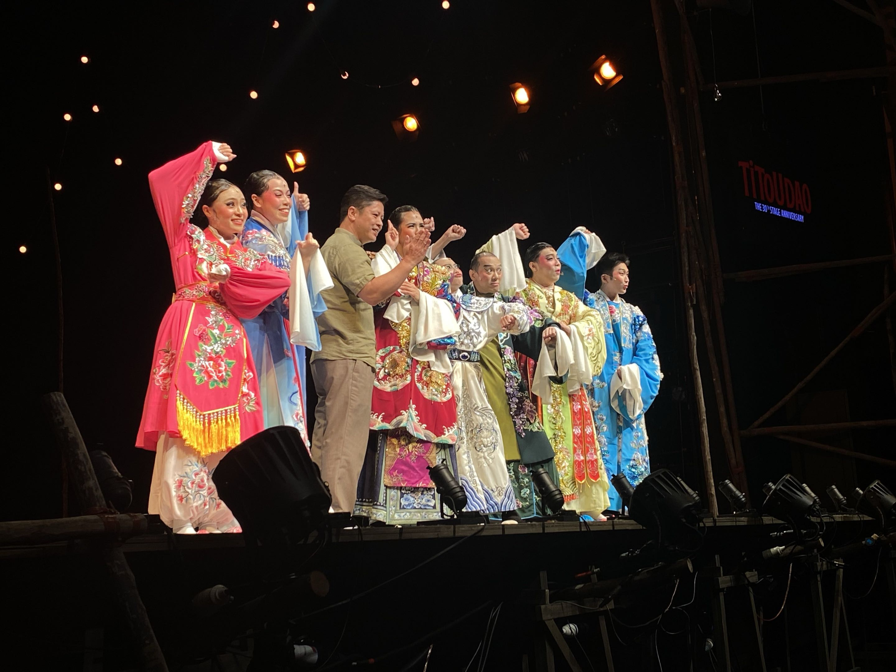

Theatrical drama is a collaborative form of fine art that uses live performers to present the experience of a real or imagined event before a live audience in a specific place, often a stage.
Structure
A typical Theatrical Drama includes acts, scenes, dialogues which serve as a division within the play.
Stagecraft
Stagecraft encompasses the technical aspects and creates the visual and auditory environment for the performance.
It includes scenic design, machinery, lighting, sound, costumes and makeup.
Characters
Characters display complexity and growth over the course of the play as the story develops.
History of Live Drama!
where does it originate?
Ancient Greece: The Birth of Formal Drama
Drama as an artistic craft was born in Athens during religious festivals honoring Dionysus,
The Mask System: Actors wore exaggerated clay and linen masks. These allowed a small cast of male actors to play multiple roles (including female characters) while acoustically projecting their voices across 15,000-seat stone amphitheatres.
The Two Pillars: This era established the classic dual symbols of theatre: Tragedy (Melpomene) and Comedy (Thalia).
The Elizabethan Era: Shakespeare & Professional Stages
During the 16th century in England, theatre transformed from informal street performances into a thriving commercial industry.
The Globe Theatre: Circular, open-air playhouses featured a "thrust stage" extending into the audience. Poorer spectators ("groundlings") stood in the pit, while wealthy patrons sat in covered galleries.
Poetic Verse: Playwrights popularized iambic pentameter, creating rhythmic dialogue that gripped audiences without modern electric lighting or sound amplification.
Asian Opera & Traditional Street Wayang
While Western drama emphasized spoken dialogue, Asian theatrical traditions evolved into total theatre—blending singing, stylized movement, martial arts, and symbolic makeup.
Street Stages (Wayang): In regional hubs like Singapore, Hokkien street opera troupes built temporary wooden stages near temples for community festivals and religious celebrations.
Stock Characters: Performers specialized in distinct role types, such as the Sheng (scholars/heroes), Dan (female leads), and Chou (comic clowns like Titoudao).
TiTouDao : A Real-Life Wayang Star
Titoudao (剃头刀) is one of Singapore’s most famous and celebrated original stage plays.
Written and directed by playwright Goh Boon Teck in 1994 for Toy Factory Productions, the play is a moving tribute to traditional Hokkien street opera (Wayang) and a landmark moment in Singapore theatrical history.
Who is "Titoudao"?
In traditional Hokkien opera, Titoudao (literally meaning "Razor") is a popular male clown/servant stock character known for being mischievous, witty, and loyal.
Premiering in 1994, Titoudao is a landmark Singaporean play by Goh Boon Teck that chronicles the inspiring true story of his mother, Madam Oon Ah Chiam. Set against the backdrop of mid-20th century Singapore, the play follows Ah Chiam’s challenging journey as a petite female Hokkien street opera (Wayang) performer who rises to fame playing the beloved male clown character, "Titoudao".

Picture of TiTouDao Cast in 2024, taken by reyes.
Through a captivating "play-within-a-play" structure, it contrasts the vibrant, stylized world of traditional street opera with Ah Chiam’s harsh real-world struggles against poverty, domestic hardship, and a rapidly modernizing society. Ultimately, the play serves as a poignant tribute to Singapore's vanishing cultural heritage and the fierce resilience of its early street performers.
Not submitted
Opera Mascot Clicker!
Click the sprite as fast as you can before time runs out!